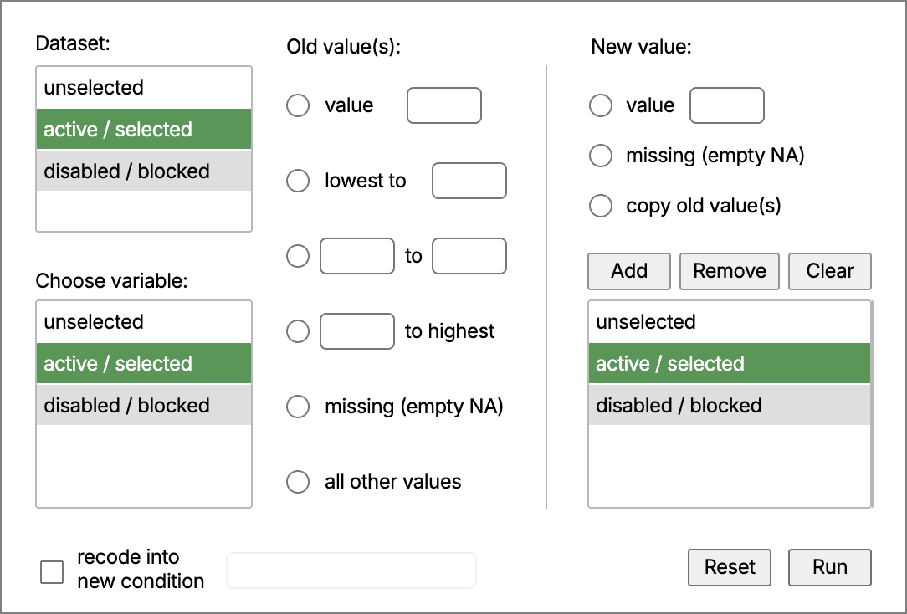
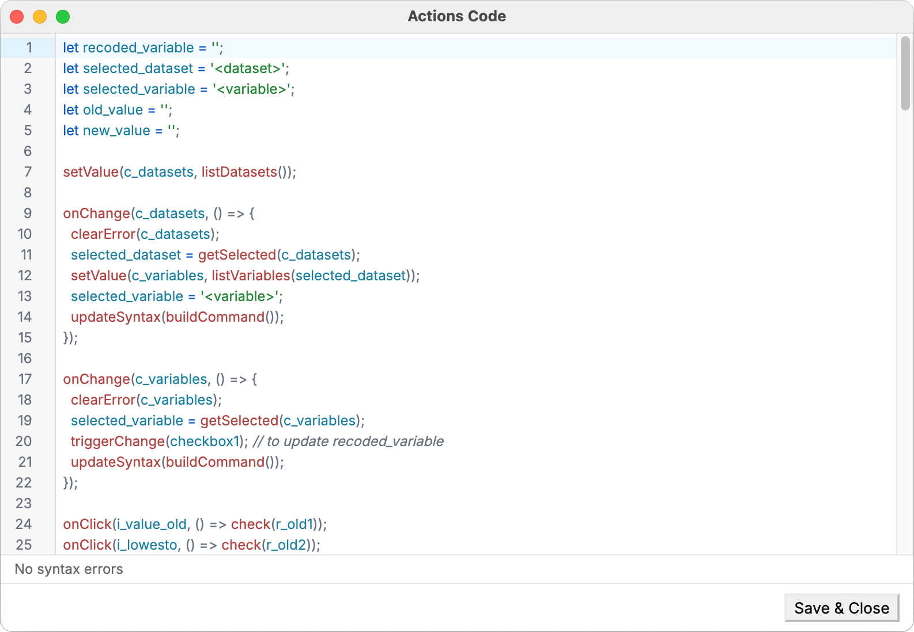
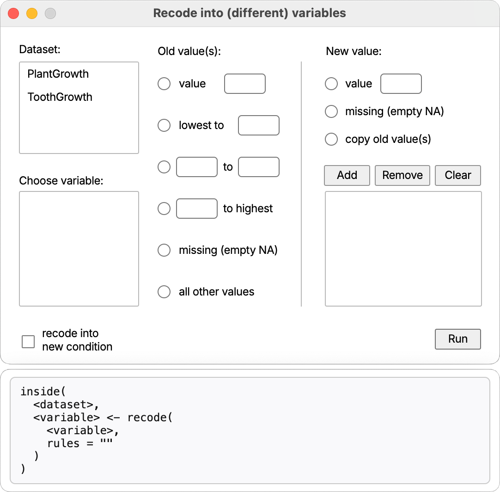

Design the interface.
Arrange inputs, lists, buttons, and other controls on the canvas. Set their labels, values, and layout.
Read about the editorA visual builder by RODA
DialogCreator is a visual authoring tool for command-based applications. Arrange the controls, connect them to JavaScript actions, and inspect the generated command before packaging the dialog.
Use the browser demo or install the desktop application.
Explore the example


Arrange the controls and define their labels, values, and layout.
A walkthrough in screenshots · Recode example from the documentation
Visual layout / JavaScript actions / Command preview / Portable dialogs
THE WORKFLOW
Design the layout, connect each interaction to code, and test the resulting command.
Arrange inputs, lists, buttons, and other controls on the canvas. Set their labels, values, and layout.
Read about the editorJavaScript actions capture the intent expressed by each choice and translate it immediately into a written command — R syntax in this example.
Read the actions APIUse the dialog as an end user would. Inspect the syntax, refine the interaction, and export a portable dialog package.
Open the browser demoIN PRACTICE / DIALOGR
DialogR brings this workflow to statistical analysis. Its Frequency table dialog lets a researcher choose a dataset and a variable, then inspect the R command before running it.
For example, selecting B1_polintr from ess builds a frequency-table command. Choosing to include the variable label adds vlabel = TRUE. JavaScript captures that intent; DialogR runs the resulting R code.
“Show the frequency table for political interest, including its variable label.”
using(
ess,
wtable(B1_polintr, vlabel = TRUE)
)An example from DialogR’s frequency-table actions. The command stays visible and can be inspected.
INTEGRATION
DialogCreator defines the dialog and the commands it generates. The host application imports the package, supplies its data, and executes the generated commands.
Read the integration referenceTRY DIALOGCREATOR
Open the browser demo to inspect the editor, actions, preview, and generated command.